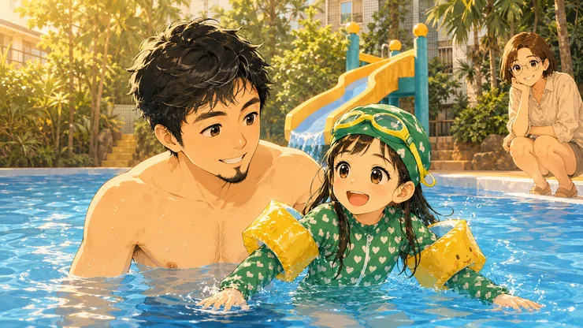

難得晴朗的天氣，有一池正午太陽卻曬不熱的水，配上興奮到忘了買票的雞爸爸，最後卻靠著一家人的協力，成就了一場看似平凡卻珍貴的夏日約會。對鼠姊姊可能只是半個小時的游泳，卻是雞爸爸深刻的夏日開場...

期待的社區游泳池終於開放了
我想我們家最期待泳池開放的人，其實不是五歲的鼠姊姊－而是雞爸爸。
雖然我們剛搬進社區時，鼠姊姊總不時提醒著：「爸爸，我們什麼時候可以下去游泳？」
那時候，我總是笑著回答：「等夏天游泳池開放，我們就來。」
而這句話，真的是～等了好久終於等到今天，想了好久終於把夢實現～
終於放晴的天氣 卻不算炎熱
雖然連日的大雨，沖散了炎熱的氣息，但看到陽光灑下來，我還是迫不及待牽著鼠姊姊下樓。
夏天，終於正式開始了～只是，事情沒有想像得那麼順利：「先生，跟您收個門票！」「啊！」
我們忘了買票，怎麼管理員又剛好去買午餐～只好請救生員通融一下，等家人再幫忙補票。
又忘了此時鼠媽媽，正留在家裡陪全副武裝穿著連身泳衣的龍弟弟在浴缸玩水，無暇看手機～
這時已經做完暖身操下水的我們，只好趕快再打給兔阿嬤求救，來幫我們送票。
全家總動員 來迎接夏天
這大概就是有孩子之後的日常，簡單到樓下游個泳，都得全家支援前線。
以前出門，只要帶上自己。現在連下樓，都是一家人的默契大考驗。
我想可能也是這原因，所以泳池的人很少。
其實我這麼說不對，不該這樣說，應該是說：整個泳池就我們兩個啊！
鼠姊姊與雞爸爸的期待都落空
鼠姊姊原本最期待的是泳池上的滑水道，可惜今年沒有開放。
她站在旁邊看了一眼，雖然有點失望，卻沒有哭鬧，只是笑著說：
「那我們玩水就好了。」
孩子好像總有一種能力，失望一下下，就又能重新找到快樂。
她趴在池邊，認真練習今天的新功課——打水：啪、啪、啪。
每一下都很用力、每一下都像在告訴我：「爸爸，你看，我有進步。」
但我拉著她的手、扶著她的身體前進時，似乎感覺她有點冷。
救生員也說：「露天泳池就是得靠太陽把水曬暖。昨天也有小朋友來，但不到半小時上岸了。」
於是我問她要不要上岸曬曬太陽，鼠姊姊點點頭，便上岸曬太陽去了。
其實隱約清楚，以今天的水溫，小朋友可能沒有辦法玩多久了。
夏天了 太陽公公也需要暖暖身
兔阿嬤下來送票的時候，鼠姊姊剛好坐在岸邊曬太陽。
一看到兔阿嬤，就興奮地站起來：「阿嬤，我會打水了！」
她立刻示範今天學到的新本領，雖然不是什麼漂亮的泳姿。
卻是她努力了一個上午，最想分享的成果，雞爸爸也笑著拍拍手。
兔阿嬤幫我們拍照留念後，我問她：「還會冷嗎？」她點點頭：「會。」
那瞬間，忽然有點捨不得。不是因為游泳結束了，而是我知道，她今天真的很努力在學游泳。
於是我請兔阿嬤先牽她上樓，她邊走邊回頭看了泳池一眼。
她沒有哭，也沒有鬧，只是有點捨不得的眼神。
雞爸爸的童年 有好多都泡在泳池裡
雞爸爸沒有立刻離開，而是在泳池裡又游了好幾趟～
整座泳池，只剩下我一個人，水面很安靜，是很久沒有屬於一個人的時光。
閉著氣潛游了幾趟，再來幾趟自由式，那種肌肉酸酸的感覺、換氣時渴望氧氣的感覺～
再輕鬆幾趟抬頭蛙、最後仰泳看著湛藍的天空和白雲，享受安靜到只剩下自己的划水聲～
想起小時候，也是整天泡在社區游泳池裡，和救生員哥哥學了這些水裡面的本領。
孩子的童年，不只是那些盛大的旅行組成的。
更多回憶，是這些看起來平凡得不能再平凡的時光。
一個還沒完全熱起來的夏天、一座幾乎沒人的社區泳池、一個練著打水的小女孩。
一位幫忙送票、拍照，怕孫女著涼的兔阿嬤。
一個留在水裡，多游了幾分鐘的雞爸爸。
今天沒有什麼特別，依舊是雞爸爸的小日子。
下午望著窗外下著大雨，幸福，本來就很少以「特別」的樣子出現。